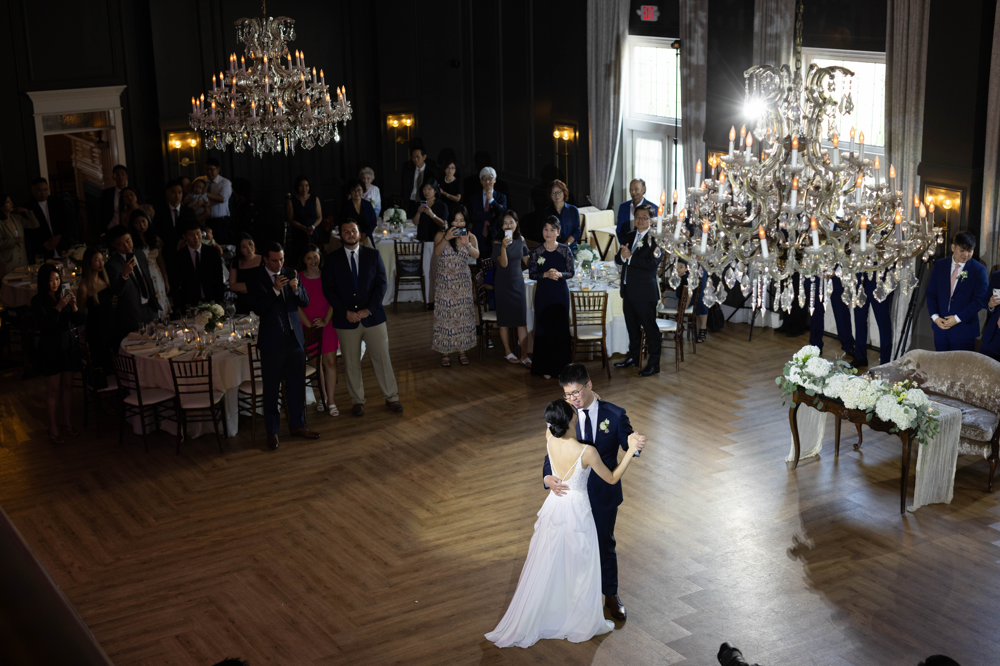
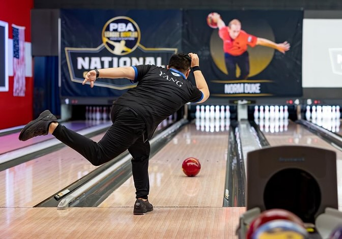

About Me
Pharmacy

I am a pharmacist currently working at a NYS Office of Mental Health facility called Sagamore Children's Psychiatric Center. I've been licensed for about 10 years now and I'd say it is a very challenging and rewarding career. It helped shape me into who I am today, developing many soft skills like clear communication, teamwork, adaptability, attention to detail, and many others. Although I could probably see myself working here until retirement, I feel that it isn't my true calling. I feel like there's more that I can and want to do in life... which is why I'm now in software development.
Photography
I am also a part-time photographer. I shoot weddings, events, engagements, food, video and more. I work mainly with my brother for his business and another close friend who also owns his own successful production company called Duet. I enjoy this job so much that I sacrifice a lot of my weekends for this gig. I think it's very fun to go out and challenge myself to create the best story possible through the shots that I get of the couple's special day. It is very satisfying when I my clients love and appreciate the work.
Bowling
I am an avid fan of bowling. It is currently one of my favorite hobbies. I bowl in 2 competitive leagues weekly all year round, averaging about 210 in both leagues. I buy quite a few new balls every 3 months. I also practice at least 1-2 times every week excluding league, which means I go bowling about 3-4 times every week. I think it's safe to say it's definitely a huge part of my life. I love it and I can't see myself stopping anytime soon!